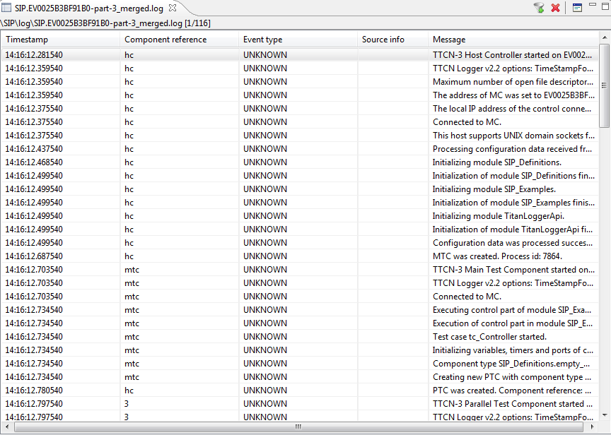

The Text Table view
Opening the Text Table View
The view can be opened in the following ways:
-
Double click on a log file in the project explorer.
-
Right click on a test case in the project explorer and select "Open Text Table View" from the context menu.
-
Right click on a log record (a line) in the MSC view and select "Open Text Table view" in the pop-up menu.
-
Click on the "Switch to Text Table" ( ) button on the MSC view.
) button on the MSC view.
Contents
The Text Table enables a textual representation of the log file.
The table
All log records in the log file are divided into the following columns:
The columns can be reordered by clicking on the header of a column and holding the left mouse button while dragging it to the preferred position.
A message in the Text table can be displayed in the Value View. The Value view is opened either by double-click on the row or using action Open Value View in
the context menu.
Toolbar buttons
-
 Opens a dialog to set the filtering rule.
Opens a dialog to set the filtering rule.
-
 Closes all open Text Table views.
Closes all open Text Table views.
-
 Shows the selected record in the Message Sequence Chart view.
Shows the selected record in the Message Sequence Chart view.
